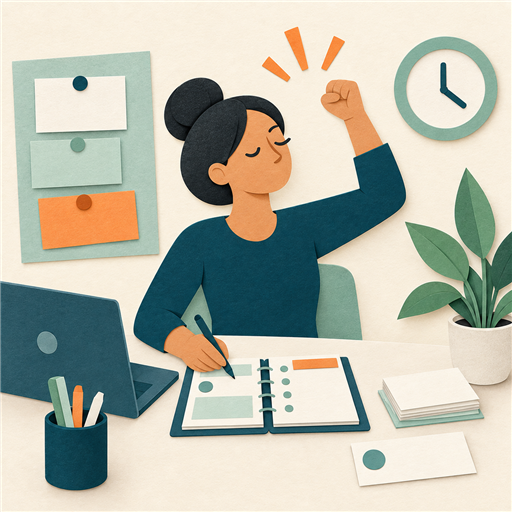
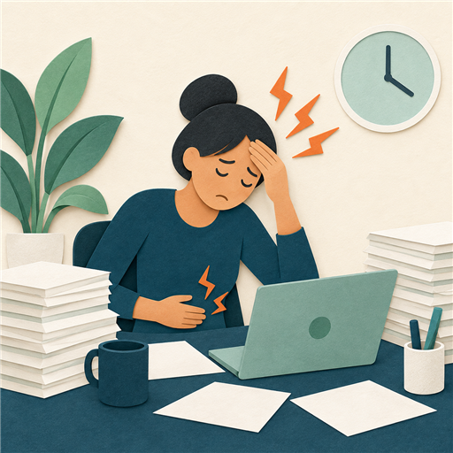

The progression
Burnout may develop gradually and progress through several stages.
Stages of burnout
The stages are the honeymoon phase, onset of stress, chronic stress, burnout, and chronic burnout.
Not everyone experiences every stage, and the severity and duration of each stage can vary.
Stages of burnout
Burnout may develop gradually and progress through several stages.
Select a stage to see more.

Honeymoon phase
A person feels motivated, energetic, and dedicated to their work.
Onset of stress
The person begins feeling stress as work hours, responsibilities, or pressure increase.
Chronic stress
Stress continues for a longer period. The person may feel overwhelmed and fatigued, and physical symptoms such as headaches or digestive issues may arise.
Burnout
The person is physically, emotionally, and mentally exhausted. Interest and productivity may decline, and cynicism toward the job may increase.
Chronic burnout
When burnout is not addressed, the person’s ability to function at work and home may become significantly impaired, and physical and mental health concerns may worsen.
Different experiences
The stages do not look the same for everyone.
What can vary
Not everyone experiences every stage. The severity and duration of each stage can vary.
Not everyone experiences every stage, and the severity and duration of each stage can vary.